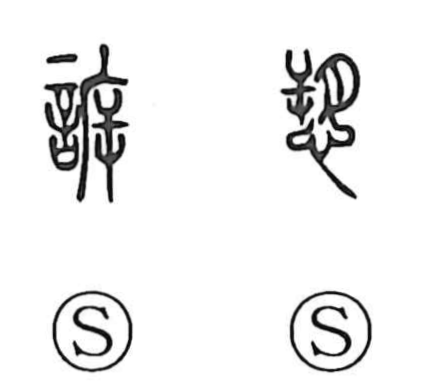

訴

Kun: uttaeru | On: so
to sue ・ to appeal ・ to accuse ・ complaint
Explanation
Shirakawa treats 訴 as a phono‑semantic graph: the semantic side is 言, “speech,” while 斥 serves as the phonetic, giving the on reading so. Early analysis understands the phonetic element as a human figure seen from the opposite side, evoking someone coming forward to speak. The Shuowen glosses it as tsuguru, “to tell, to announce,” and from the idea of coming to report it developed the sense “to appeal, to lodge a complaint.” An older variant writes the word as 愬, where 朔 functions as the phonetic marker. In later usage the character naturally extends to legal contexts, as in 訴訟, “lawsuit.”